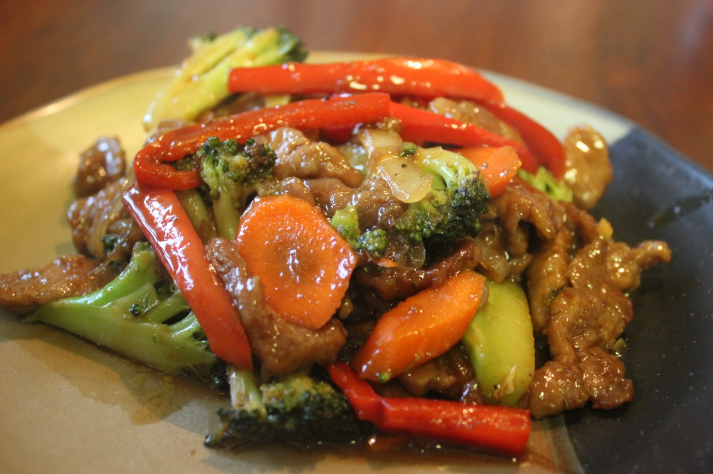

Crispy Ginger Beef

A recipe that will even beat takeout! Serve with some rice and add some extra chilli flakes if you like it spicey!
- 3/4 cup cornstarch
- 1/2 cup water
- 2 eggs
- 1 pound flank steak, cup into thin strips
- 1/2 cup canola oil, or as needed
- 1 large carrot, cut into matchstick size pieces
- 1 green pepper, cut into matchstick size pieces
- 1 red pepper, cut into matchstick size pieces
- 3 green onions, chopped
- 1/4 cup minced fresh ginger root
- 5 garlic cloves, minced
- 1/2 cup white sugar
- 1/4 cup rice vinegar
- 3 tablespoons soy sauce
- 1 tablespoon seasame oil
- 1 tablespoon red pepper flakes, or to taste
- Place cornstarch in a large bowl; gradually whisk in water until smooth. Whisk eggs into cornstarch mixture; toss steak strips in mixture to coat.
- Pour canola oil into wok 1-inch deep; heat oil over high heat until hot but not smoking. Place 1/4 of the beef strips into hot oil; separate strips with a fork. Cook, stirring frequently, until coating is crisp and golden, about 3 minutes. Remove beef to drain on paper towels; repeat with remaining beef.
- Drain off all but 1 tablespoon oil; cook and stir carrot, green bell pepper, red bell pepper, green onions, ginger, and garlic over high heat until lightly browned but still crisp, about 3 minutes.
- Whisk sugar, rice vinegar, soy sauce, sesame oil, and red pepper together in a small bowl. Pour sauce mixture over vegetables in wok; bring mixture to a boil. Stir beef back into vegetable mixture; cook and stir just until heated through, about 3 minutes.